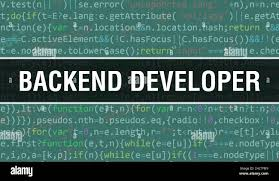

Les missions d'un dévoloppeur BackendSelon le contexte, le développeur back-end peut avoir un rôle plus ou moins large. Il peut aussi bien être un exécutant (avec un rôle « simple » de codeur), qu’un décisionnaire dans les choix techniques. Dans ce dernier cas, et sans la présence d’un Architecte au sein de l’équipe technique, il peut réfléchir à l’architecture qu'il va utiliser ou améliorer. En fonction du budget, du temps imparti pour sa mission, des besoins et des attentes de son employeur, il mettra en place un environnement adapté en choisissant les bonnes technologies (SGBD, Frameworks, Versioning etc.) Le développement back end peut donc englober la mise en place, la configuration et le maintien de plusieurs composantes essentielles d’un projet web |
les compétences et qualités requises pour être développeur Back-EndMéthodologie, rigueur, pragmatisme et travail d'équipe sont les premières clés de réussite pour un développeur back-end. Aussi, se renseigner constamment sur les évolutions technologiques du domaine afin de rester à jour demande un bon niveau en anglais, de la passion et de la curiosité. D’un point de vue techno : outre maîtriser un outil de gestion de projet comme github ou gitlab, le développement back-end demande des compétences techniques minimum |
Quelles études ou formations pour devenir développeur BackUn BTS ou DUT informatique est une bonne formation de base. Enchaîner sur une licence puis un master en développement web permettra de parfaire ses connaissances théoriques et d'accéder à des postes plus exigeants et ambitieux. Des écoles comme EPITECH, l’HETIC, l’ESGI ou l’ECE Tech proposent des bachelors en développement web ainsi que des cursus Bac +5 reconnus. |  |